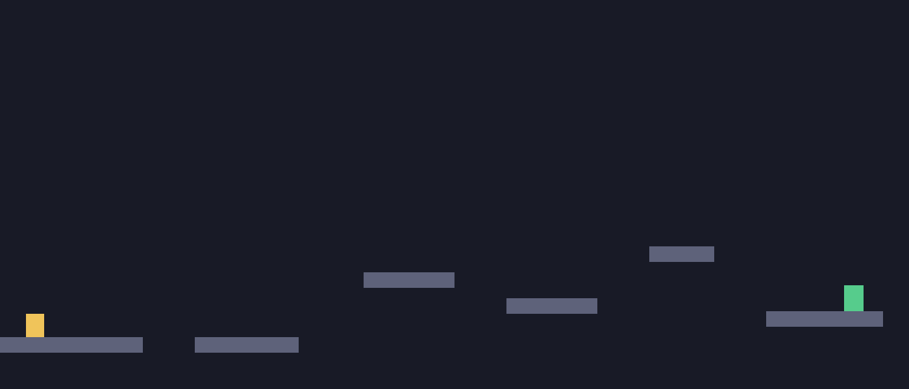

level_1 · PPO to behavioral cloning
The Path to 100%
Every real approach tried, in the order we tried them, with the actual numbers each one produced. Not just the ones that worked. Click a bar in the chart to jump to that generation's card. Deterministic means the policy always takes its single most likely action; stochastic means it samples, the way it actually trained.
Completion rate by generation
click a bar → jump to detailsGenerations
Baseline PPO
StartPlain PPO on the shaped reward, standard hyperparameters, no help from anywhere else.
The level needs one jump timed to a specific tick. PPO's own exploration never reliably stumbles onto it.
Learning-rate decay
Small winIdea: decay the learning rate through the back half of training, so late updates stop overwriting behavior that already works.
A real, repeatable improvement, but a small one. It doesn't touch the actual reason the agent isn't finding the jump.
A bigger batch
No changeIdea: a larger PPO batch (256 vs. 64), stacked on Gen 1, might cut the gradient noise diluting the rare JUMP action's signal.
No improvement over decay alone. Batch size wasn't the bottleneck.
Warm-start from an expert
FailedIdea: before any PPO training starts, copy a simple rule-based controller that already solves the level every time directly into the policy.
Overwritten by PPO's own gradient updates within roughly 10,000 steps. A one-time pretrain doesn't survive.
Persistent cloning pressure
BreakthroughIdea: instead of copying the expert once, keep reapplying a small, decaying dose of that same pressure after every rollout, so it can't get forgotten.

best checkpoint, 460k steps, second attempt shown · full checkpoint progression on the companion page
The breakthrough of the whole PPO effort, and the first variant with no checkpoint stuck at 0%. Persistent pressure stops the forgetting that killed Gen 03.
2x entropy bonus
RegressionIdea: double PPO's entropy coefficient, hoping more built-in exploration would reinforce the behavior Gen 04 found.
Destabilized late training instead of helping. A promising 400k checkpoint had fallen to zero by 500k.
Broader demos + entropy decay
RegressionIdea: two changes at once. Cover more than the golden path with recovery demonstrations, and decay the entropy bonus so the policy can settle late.
Also negative, and a process mistake: bundling two untested changes into one run means we can't tell which one caused it.
A memory feature, no PPO at all
SolvedIdea: the bottleneck was never the training method. Once the agent's speed maxes out, its view of the world barely changes for fifteen ticks, and it has no way to tell how long it's been running. Give it that one feature (ticks since it last touched ground, built only from what it already sees) and skip PPO entirely in favor of directly copying the expert.

Not a guess we got lucky on. An instrumented trace of a 98%-accurate clone showed its jump probability sitting completely flat for fifteen consecutive ticks. One self-derived feature fixed it completely.